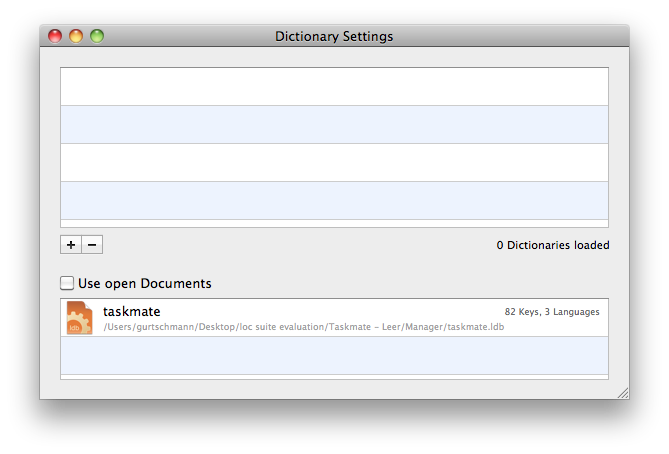

Now that you have added the resources to be localized and defined the languages, you are ready to create the Localizer files for the translators. The actual localization of the strings will take place in the Localizer module of the Localization Suite. Please refer to the Localizer Help for further information on working with the Localizer.

First of all you need to set the location of the Localizer files. By default, the Localization Manager will create the Localizer files in the project folder of the Localization Manager. If you want the Localizer files to be saved in a different folder, click Set Location... at the bottom of the Localization Manager window and set the folder for the Localizer files to be saved.
Embedding Dictionaries into the Localizer file
You might have Localization Dictionaries of previous localizations which might be helpful for your translators when working on a new project. Such dictionaries might include localizations of previous software builds or general menu terminology to be used. Please refer to the Localization Dictionary Help for further details on how to create, import and export Dictionaries.
Once you have created a Dictionary with the Localization Dictionary, you can embed this dictionary into the Localizer files by clicking Window > Show Dictionaries...

The Dictionary window will open. Click + and browse for the dictionary you want to add to the Localizer file. Select the desired dictionary file and click Open. The selected dictionary will now appear in the Dictionary list and will automatically be included in the Localizer file.
Note:
Alternatively you can open the Dictionary window by clicking Options... in the Localization file section of the Localization Manager window.
Creating one Localizer file for each language
If you use multiple translators localizing into one language each, you should create a Localizer file for each individual language. To do so, mark the option Selected languages in separate files and mark the languages you want to be exported into individual Localizer files. To create the Localizer files click Write Out in the Localizer file section of the Localization Manager window.
Note:
If you want this setting to be applied to all languages, simply deselect all languges in the language list. This will set the Selection in the Localization Manager window to All languages.
In case you use one or more translators that will localize your application into more than one language each, see Creating Localizer files below with multiple languages.
Creating Localizer files with multiple languages
Are you employing a translator that can localize your resources into multiple languages? Instead of providing multiple Localizer files, one for each language, you can also create one Localizer with multiple languages. Simply mark the languages to be included in the Localizer file in the Languages list of the Localization Manager window, mark the option Selected languages in one file and click Write Out. The Localization Manager will create one Localizer file containing the selected languages.
Useful hint:
If you want this setting to be applied to all languages, simply deselect all languges in the language list. This will set the Selection in the Localization Manager window to All languages.
You can combine Localizer files with one language only and multiple languages. See Creating one Localizer file for each language for information on how to create Localizer files containing one single language.
Are you looking for a certain topic? Then take a look at the topics list.
Next chapter: Localizing the Resources